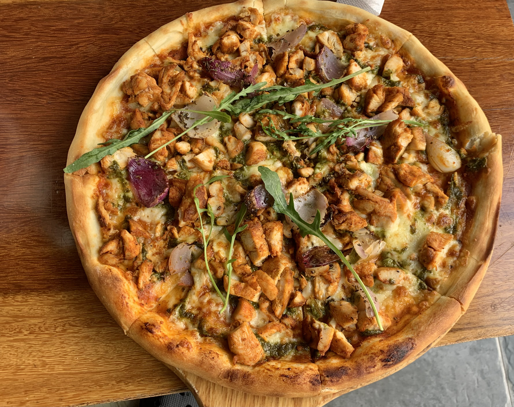

Chicken Pizza Recipe
Home

A freshly baked chicken pizza is warm, savory, and full of flavor. Tender pieces of seasoned chicken rest on a bed of rich tomato sauce and melted mozzarella cheese. The crust is perfectly golden and crispy on the outside, yet soft on the inside. Topped with bubbling cheese and a hint of herbs, every bite is satisfying, comforting, and absolutely delicious.
This chicken pizza has become a favorite among our readers thanks to its flexibility. You can switch up the toppings, adjust the seasonings, or make it as simple or as loaded as you like. If you prefer to prepare it just as intended, here’s everything you’ll want to have on hand before you start:
Ingredients needed for this chicken pizza
- Chicken Breasts: Juicy and flavorful, chicken adds a hearty and satisfying base to the pizza.
- Hot Sauce: Adds a bold, spicy kick that brings heat and tangy flavor to every bite.
- Butter: Enhances richness and helps blend the flavors smoothly.
- Blue Cheese Dressing: Creamy and tangy, it balances the spice with a smooth, distinctive taste.
- Pizza Crust: The base of the pizza, providing structure with a crisp outside and soft inside.
- Mozzarella Cheese: Melts beautifully, creating a creamy, golden layer that ties all the ingredients together.
How much do you need for an original recipe (1X)?
- 3 cooked chicken breasts, diced
- 1 (2 ounce) bottle hot sauce
- 2 tablespoons butter, melted
- 1 (8 ounce) bottle blue cheese salad dressing
- 1 (16 inch) prepared pizza crust
- 1 (8 ounce) package shredded mozzarella cheese
Directions
- Gather the ingredients.
- Preheat the oven to 425 degrees F (220 degrees C).
- Mix chicken, hot sauce, and melted butter in a bowl until well combined.
- Place crust onto a rimmed baking sheet or pizza pan. Spread salad dressing over crust.
- Top with chicken mixture and sprinkle with mozzarella.
- Bake in the preheated oven until crust is golden brown and cheese is bubbly, about 5 to 10 minutes. Let sit a few minutes before slicing.